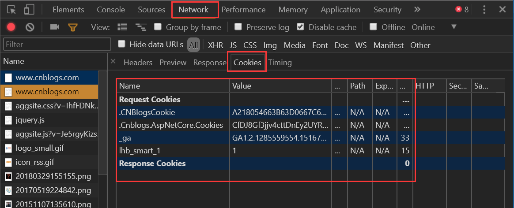
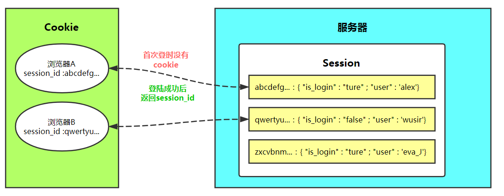

目录
大家都知道HTTP协议是无状态的。
无状态的意思是每次请求都是独立的，它的执行情况和结果与前面的请求和之后的请求都无直接关系，它不会受前面的请求响应情况直接影响，也不会直接影响后面的请求响应情况。
一句有意思的话来描述就是人生只如初见，对服务器来说，每次的请求都是全新的。
状态可以理解为客户端和服务器在某次会话中产生的数据，那无状态的就以为这些数据不会被保留。会话中产生的数据又是我们需要保存的，也就是说要“保持状态”。因此Cookie就是在这样一个场景下诞生。
Cookie具体指的是一段小信息，它是服务器发送出来存储在浏览器上的一组组键值对，下次访问服务器时浏览器会自动携带这些键值对，以便服务器提取有用信息。
cookie的工作原理是：由服务器产生内容，浏览器收到请求后保存在本地；当浏览器再次访问时，浏览器会自动带上Cookie，这样服务器就能通过Cookie的内容来判断这个是“谁”了。
我们使用Chrome浏览器，打开开发者工具。

request.COOKIES['key']
request.get_signed_cookie('key', default=RAISE_ERROR, salt='', max_age=None)get_signed_cookie方法的参数：
rep = HttpResponse(...)
rep ＝ render(request, ...)
rep.set_cookie(key,value,...)
rep.set_signed_cookie(key,value,salt='加密盐',...)参数：
def logout(request):
rep = redirect("/login/")
rep.delete_cookie("user") # 删除用户浏览器上之前设置的user的cookie值
return repdef check_login(func):
@wraps(func)
def inner(request, *args, **kwargs):
next_url = request.get_full_path()
if request.get_signed_cookie("login", salt="SSS", default=None) == "yes":
# 已经登录的用户...
return func(request, *args, **kwargs)
else:
# 没有登录的用户，跳转刚到登录页面
return redirect("/login/?next={}".format(next_url))
return inner
def login(request):
if request.method == "POST":
username = request.POST.get("username")
passwd = request.POST.get("password")
if username == "xxx" and passwd == "dashabi":
next_url = request.GET.get("next")
if next_url and next_url != "/logout/":
response = redirect(next_url)
else:
response = redirect("/class_list/")
response.set_signed_cookie("login", "yes", salt="SSS")
return response
return render(request, "login.html")Cookie虽然在一定程度上解决了“保持状态”的需求，但是由于Cookie本身最大支持4096字节，以及Cookie本身保存在客户端，可能被拦截或窃取，因此就需要有一种新的东西，它能支持更多的字节，并且他保存在服务器，有较高的安全性。这就是Session。
问题来了，基于HTTP协议的无状态特征，服务器根本就不知道访问者是“谁”。那么上述的Cookie就起到桥接的作用。
我们可以给每个客户端的Cookie分配一个唯一的id，这样用户在访问时，通过Cookie，服务器就知道来的人是“谁”。然后我们再根据不同的Cookie的id，在服务器上保存一段时间的私密资料，如“账号密码”等等。
总结而言：Cookie弥补了HTTP无状态的不足，让服务器知道来的人是“谁”；但是Cookie以文本的形式保存在本地，自身安全性较差；所以我们就通过Cookie识别不同的用户，对应的在Session里保存私密的信息以及超过4096字节的文本。
另外，上述所说的Cookie和Session其实是共通性的东西，不限于语言和框架。
# 获取、设置、删除Session中数据
request.session['k1']
request.session.get('k1',None)
request.session['k1'] = 123
request.session.setdefault('k1',123) # 存在则不设置
del request.session['k1']
# 所有 键、值、键值对
request.session.keys()
request.session.values()
request.session.items()
request.session.iterkeys()
request.session.itervalues()
request.session.iteritems()
# 会话session的key
request.session.session_key
# 将所有Session失效日期小于当前日期的数据删除
request.session.clear_expired()
# 检查会话session的key在数据库中是否存在
request.session.exists("session_key")
# 删除当前会话的所有Session数据
request.session.delete()
# 删除当前的会话数据并删除会话的Cookie。
request.session.flush()
这用于确保前面的会话数据不可以再次被用户的浏览器访问
例如，django.contrib.auth.logout() 函数中就会调用它。
# 设置会话Session和Cookie的超时时间
request.session.set_expiry(value)
* 如果value是个整数，session会在些秒数后失效。
* 如果value是个datatime或timedelta，session就会在这个时间后失效。
* 如果value是0,用户关闭浏览器session就会失效。
* 如果value是None,session会依赖全局session失效策略。
from functools import wraps
def check_login(func):
@wraps(func)
def inner(request, *args, **kwargs):
next_url = request.get_full_path()
if request.session.get("user"):
return func(request, *args, **kwargs)
else:
return redirect("/login/?next={}".format(next_url))
return inner
def login(request):
if request.method == "POST":
user = request.POST.get("user")
pwd = request.POST.get("pwd")
if user == "alex" and pwd == "alex1234":
# 设置session
request.session["user"] = user
# 获取跳到登陆页面之前的URL
next_url = request.GET.get("next")
# 如果有，就跳转回登陆之前的URL
if next_url:
return redirect(next_url)
# 否则默认跳转到index页面
else:
return redirect("/index/")
return render(request, "login.html")
@check_login
def logout(request):
# 删除所有当前请求相关的session
request.session.delete()
return redirect("/login/")
@check_login
def index(request):
current_user = request.session.get("user", None)
return render(request, "index.html", {"user": current_user})Django中默认支持Session，其内部提供了5种类型的Session供开发者使用。
1. 数据库Session
SESSION_ENGINE = 'django.contrib.sessions.backends.db' # 引擎（默认）
2. 缓存Session
SESSION_ENGINE = 'django.contrib.sessions.backends.cache' # 引擎
SESSION_CACHE_ALIAS = 'default' # 使用的缓存别名（默认内存缓存，也可以是memcache），此处别名依赖缓存的设置
3. 文件Session
SESSION_ENGINE = 'django.contrib.sessions.backends.file' # 引擎
SESSION_FILE_PATH = None # 缓存文件路径，如果为None，则使用tempfile模块获取一个临时地址tempfile.gettempdir()
4. 缓存+数据库
SESSION_ENGINE = 'django.contrib.sessions.backends.cached_db' # 引擎
5. 加密Cookie Session
SESSION_ENGINE = 'django.contrib.sessions.backends.signed_cookies' # 引擎
其他公用设置项：
SESSION_COOKIE_NAME ＝ "sessionid" # Session的cookie保存在浏览器上时的key，即：sessionid＝随机字符串（默认）
SESSION_COOKIE_PATH ＝ "/" # Session的cookie保存的路径（默认）
SESSION_COOKIE_DOMAIN = None # Session的cookie保存的域名（默认）
SESSION_COOKIE_SECURE = False # 是否Https传输cookie（默认）
SESSION_COOKIE_HTTPONLY = True # 是否Session的cookie只支持http传输（默认）
SESSION_COOKIE_AGE = 1209600 # Session的cookie失效日期（2周）（默认）
SESSION_EXPIRE_AT_BROWSER_CLOSE = False # 是否关闭浏览器使得Session过期（默认）
SESSION_SAVE_EVERY_REQUEST = False # 是否每次请求都保存Session，默认修改之后才保存（默认）